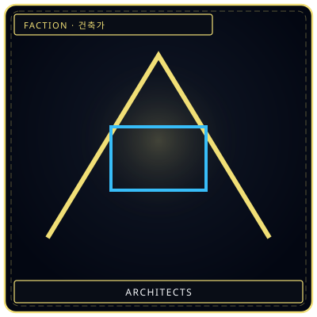
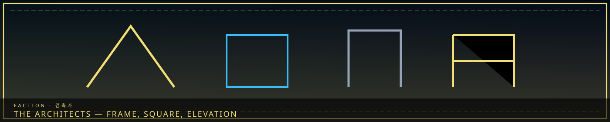
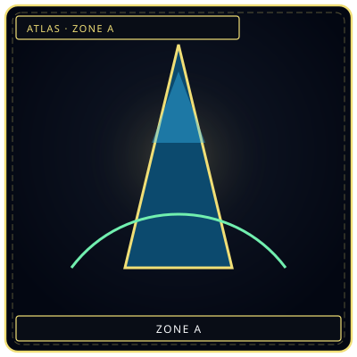

FrameElevation lines
/// RAPID JUMP:
STATUS: ARCHIVE VERIFIED |
CLEARANCE: LEVEL-4 OVERSIGHT |
PROTOCOL: REVERIE DIRECTORATE
ARTICLE
DISCUSSION
SOURCE
HISTORY
YEAR 4,238 · DAWN OF HOPE
FACTIONS & GUILDS RECORD
The Architects (Geonchukga Guild)
Contents
“They draft the city the way other people draft a will.”


SpireWhat they raise WeightHan they shape
WeightHan they shapeVI. The Architects — Protagonist Role
Who They Are
"We do not fight sorrow. We shape it. We build with the very thing that would drown us."
The Architects are builders, repairers, and shapers of Somnarak. They work with raw Han to construct, maintain, and sometimes destroy.
Organization
Structure: A guild operating out of The Architect's Hall (Building 6 of the Alpha Tree).
Ranks:
| Rank | Title | Role |
|---|---|---|
| 1 | Apprentice | Learning to handle Han without breaking |
| 2 | Crafter | Can work with Han under supervision |
| 3 | Builder | Independent work — construction, minor repairs |
| 4 | Shaper | Major projects — new sectors, large-scale reshaping |
| 5 | Master Architect | Designs the city's future — reports to Head Architect |
| 6 | Head Architect | Council member — supreme authority over all building |
Training
- Resistance training — learning to withstand Han's emotional weight
- Shaping techniques — learning to mold Han into physical form
- Dream exposure — brief, controlled dips into Somnus
- The Trial of Building — constructing something under extreme Han pressure
- Failure rate is high. Many Fracture during training. This is accepted as inevitable.
What Architects Do
- Construction: Building new structures, expanding sectors, creating infrastructure
- Repair: Fixing damage caused by Han overflow, Fractures, or time
- Reshaping: Altering the city's layout — rerouting sorrow flows, creating buffers
- Containment: Building structures to contain dangerous Sorrow-Wrought entities
- Destruction: Safely collapsing structures before they become dangers
The Cost
| Toll | Effect |
|---|---|
| Physical | Ages the body, chronic pain, grey hair, dark veins, altered eyes |
| Emotional | Handling raw sorrow means feeling it — risk of burnout or Fracture |
| Memory bleed | Sorrow may attach to you — gaining memories that aren't yours |
| The Architect's Mark | Long-serving Architects develop visible changes — badges of honor or warning signs |
The Architect's Philosophy
Unlike Debt Collectors (who enforce) or Memory Keepers (who preserve), Architects believe in shaping the future. They don't accept the system as-is — they try to make it better within its constraints.
Core Question:
"If I cannot stop the sorrow, can I build something that makes it bearable?"
Tension with other factions:
- The Council: Sees change as dangerous — "You build too fast, you break what works"
- Debt Collectors: See reform as avoiding payment — "You shelter them from what they owe"
- Citizens: May not trust those who shape their prison — "You built these walls"
- Themselves: When their "improvements" cause new suffering
The Architects in the Web of Power
The Architects
| Faction | Relationship | Dynamic |
|---|---|---|
| Council | Tension | Architects want reform; Council resists |
| Collectors | Conflict | Architects shelter debtors; Collectors pursue them |
| Keepers | Tension | Architects destroy old structures; Keepers preserve them |
| Wardens | Tension | Architect construction zones create security gaps |
| Weavers | Ignored | Architects focus on the physical; Weavers focus on the Dream |
| R.D. | Cooperation | Architects build for the R.D.; R.D. provides research |
| Menders | Alliance | Menders are the Architects' field agents |
| Frays | Conflict | Frays sabotage construction for profit |
Architect Powers — Han Shaping
Architect Powers — Han Shaping
Core abilities:
| Ability | Description | Risk |
|---|---|---|
| Han Sensing | Detect Han flows and anomalies | Low |
| Han Shaping | Mold solidified Han into forms | Medium |
| Han Redirect | Reroute Han flows | High |
| Han Containment | Create structures that hold entities | High |
| Han Purging | Remove excess Han | Very High |
Advanced (Shapers+):
| Ability | Description | Risk |
|---|---|---|
| Resonance | Deep connection with entity — enables M.A.W. extraction | Fracture |
| Architectural Weaving | Complex structures interacting with Han flows | Burnout |
| The Architect's Eye | See sorrow structure of buildings/people | Cumulative trauma |
| The Architect's Hand | Telekinetic Han shaping | Mental exhaustion |
If the Architects Fall
If the Architects Fall
Trigger: A massive Han overflow event Fractures the entire Architect corps.
Consequences:
- No new construction — the city cannot grow or repair
- Existing structures begin to decay — without maintenance, Han structures deteriorate
- Containment fails — Sorrow Entities escape without Architect-built barriers
- The R.D. loses its construction support — operations slow
Who fills the void: Menders take over basic repairs. The R.D. builds its own structures. The Council recruits new Architects — but training takes years.
The question: "If no one can build, does the city crumble — or does it learn to live with imperfection?"
CANONICAL RECORD: Sourced directly from the official Project Somnarak Worldbuilding Codex.
CANONICAL CROSS-LINKS & ATLAS CONNECTIONS